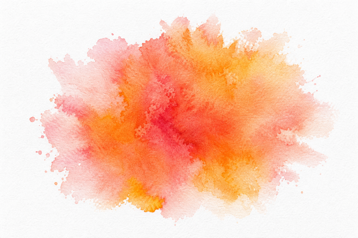

教育学硕士（瑞士伯尔尼大学）
15 年教育产品与教学闭环实战
Base 成都 ｜ 可接全国项目合作
课程卖不动
交付不统一
老师不会讲
用户学了没效果
我不是只做课程设计的人。
我能做的是——
先诊断
2–3 周，看数据 + 看现场。在混乱的课程体系中发现真正的问题。
再方案
给你可执行的路径，不是 PPT。把问题翻译成可落地、可复制、可增长的产品方案。
后陪跑
落地过程中随时调整。让方案在教室里活起来。

DEMO 课转化率
3 周诊断 + 教学触点重构，试听课转化直接翻倍
教师流失率
搭建培训切片体系 + 成长绑定机制，留存率 99.7%
师训覆盖教师
混合培训体系一次性解决规模化师资培养
"陈老师帮我们做 DEMO 课诊断后，3 周时间转化率翻倍。她不是给我们一个 PPT，而是带着我们现场改、现场练。"
—— 某教育机构创始人
"教师流失率从 40% 降到 0.3%，这在教育行业几乎不可能。她做到了。"
—— 某机构教学负责人
"8 周时间，从 0 到完整小课包交付，我们直接启动招生。她是我合作过最「落地」的产品人。"
—— 某课程合作方